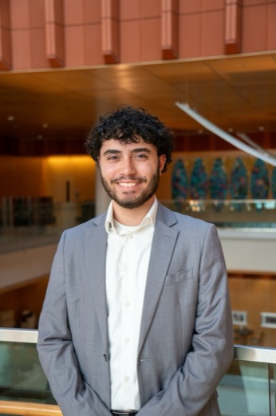
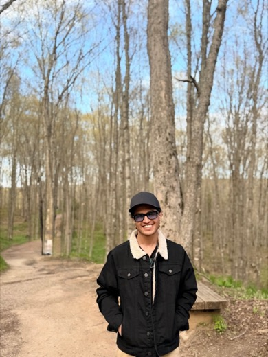
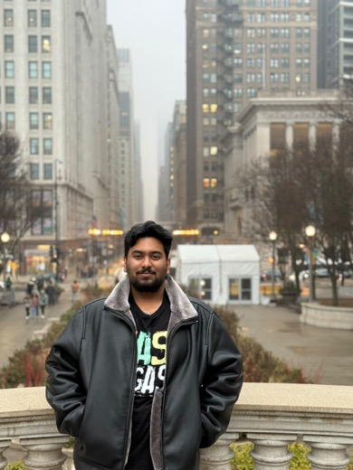

EA
Eliot Ahn
EOQ Lab research assistant
Our mission: to catalyze innovation in education operations research by identifying the field's most critical questions — and generating the data to solve them.
Why “EOQ”?
EOQ is also the Economic Order Quantity — the classic inventory model at the heart of operations management. We borrow the name to bring that same operational lens to education.
Through qualitative research and conversations with districts, teachers, and education leaders, we surface the operational problems that matter most.
We gather the data needed to tackle those problems — which often means creative approaches and looking in places no one else thinks to look.
Core operations-management problems, studied in the context of education:
How schools and districts source, purchase, and fund the materials students need.
Designing agreements — with vendors, partners, and staff — that align incentives and deliver results.
How new tools, including AI, are adopted and put to work in everyday school operations.
Coordinating services across schools, nonprofits, and community organizations.
How districts design facilities, classrooms, and boundaries to support learning.
Supporting teachers and staff — and helping them work effectively and productively.
Directed by Samantha Keppler, Associate Professor of Technology & Operations, University of Michigan Ross School of Business.
Building a repository of education operations data on districts, schools, teachers, and students.
EOQ Lab research assistant

An undergraduate at Michigan studying Data Science, drawn to using data to answer meaningful questions and solve real-world problems. In the EOQ Lab he downloads and organizes data from multiple U.S. states to support the lab's education-data research, building programming skills and algorithms through hands-on work.
EOQ Lab research assistant
A Master's student in Applied Statistics. Frank graduated from NYU with a BS in Business and worked several years in finance as a product manager before returning to school to move into more technical work. Outside of research and classes, he's kayaking and fishing the lakes around Michigan.

A first-year MS Data Science student at Michigan. With a background in full-stack development at FedEx, he now builds with LLMs and retrieval-augmented generation (RAG), on a foundation of Python, SQL, and AWS. Off the clock, he's watching or talking soccer, or gaming.
A Master's student in Data Science interested in medical image segmentation, vision-language models, and 3D computer vision. He is passionate about applying machine learning to real-world problems, with a focus on multimodal AI systems. Outside research, he enjoys chess.

A Master's student in Computer Science and Engineering at Michigan. Before graduate school he worked as an Application Engineer building full-stack applications, backend services, and scalable data pipelines. His interests sit at the intersection of software engineering and AI, building intelligent, scalable systems for real-world use.
A junior studying Computer Engineering and Data Science at Michigan. On the lab's data-collection team he builds the public-education data pipeline, focusing on browser automation and reverse-engineering state data portals to unlock hard-to-reach public data. Outside the lab, he enjoys cooking, baking, and reading.
Cutting-edge research on educational procurement and supply chains, and generative-AI implementation.
The EOQ Lab brings together students and faculty who want to collect data, analyze it, and grow the scholarship of education operations together.
Get in touch